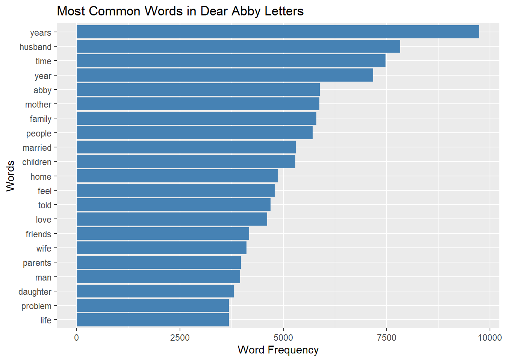
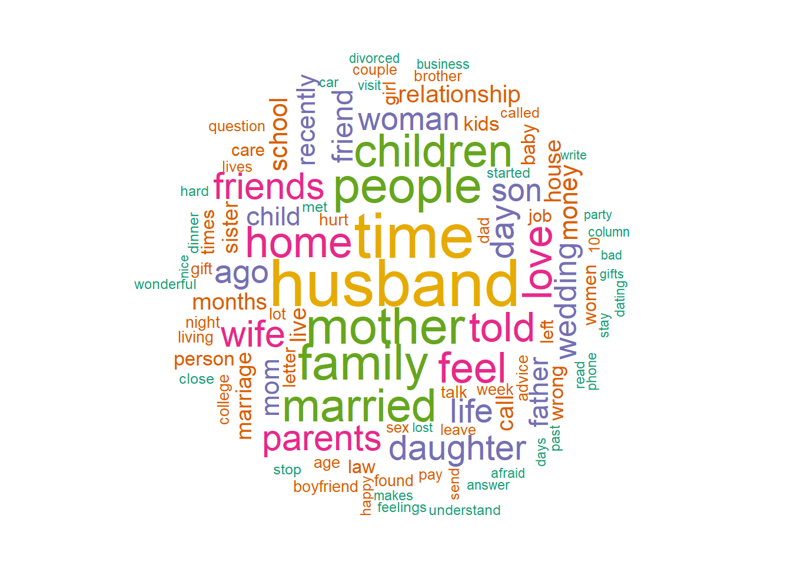
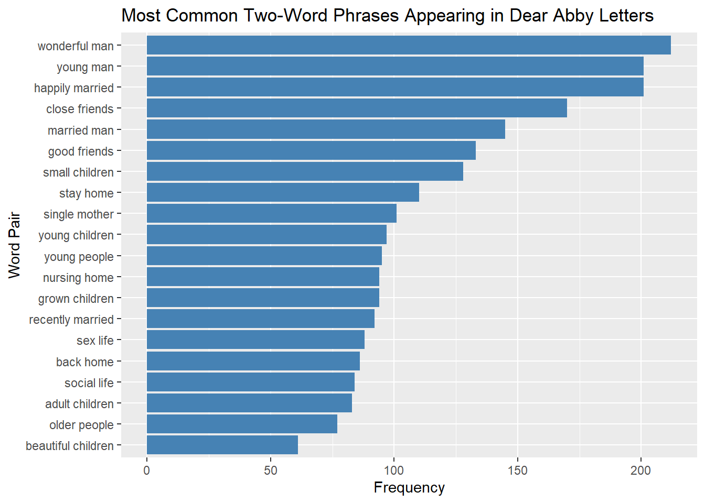
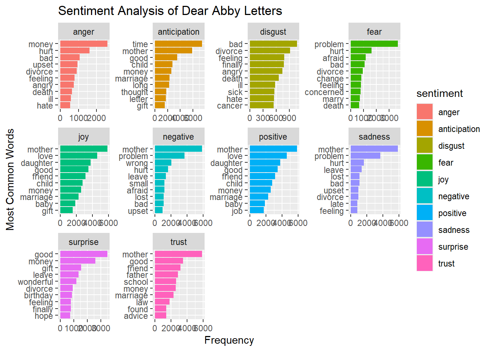

Text Analysis: Dear Abby Letters
Introduction
In this project I will analyze questions sent into the Dear Abby advice column that was founded in 1956 and is still currently active. People immediately took a liking to this type of media because it was honest, relatable, (and a little messy). The column offered accessable advice to personal struggles with an empathetic, practical and often witty voice while addressing taboo subjects around mental health, sexuality, or politics. In this project I would like to answer some questions about the most commonly asked questions and topics by searching for commonly used words, common word pairs, and whether the questions appear to be more positive, negative or carry other sentiments in the majority.
Preparing the Data
To analyze the text, I converted the questions into individual words using tokenization. This will allow me to count word appearances, look at sentiment patterns, and discover overall patterns across the data set.
Analyzing Data With Str Functions
From this initial analysis I wanted to explore some basic patterns. I looked for words mentioning family members, romantic relationships, and how often question marks appear to get a first impression of the data. The summary shows that questions involving these two topics I selected appear often which supports the fact that the Dear Abby advice column is most often giving advice about personal relationships. I used str_detect() to search for certain words, str_count() to count the question marks, and str_lentgh() to measure the length of the questions.
Most Common Words
Firstly, I would like to look at the most commonly used words across the questions to see if I can pick out any obvious themes that seem to be reappearing in people’s letters. This can show what kind of things people struggle with the most in their everyday lives that they would like to get someone else’s insight on. To do this, I decided to remove common stop words like “the”, “and” or “to” and created a horizontal bar plot with the 20 most common words.
Fig-alt: “This horizontal bar chart shows the 20 most common words in Dear Abby letters after removing stop words. The x-axis shows word frequency (range from 0 to 10000) and the y-axis lists the 20 words. Words such as husband, mother, family, married, and children appear most frequently, showing that many letters focus on family and relationship issues.”
This plot revealed that the most common words in the database include “years”, “husband”, “mother”, “family”, “married”, and “children”. These words suggest that many questions revolve around family relationships and married life. Romantic relationships and marital issued seem to be frequent topics, as well family conflicts or parenting concerns. Words like “love”, “problem”, “feel” seem to suggest that the writer’s of the questions are looking for emotional advice about personal situations.
Word Cloud
The world cloud shows another kind of visual summary of the most common words used in the letters sent to the advice column. Larger words appear more frequently in the dataset like “husband”, “mother”, or “family”, reinforcing the earlier findings about personal relationships. This visualization provides a quick way to see the most dominant themes of the dataset.

Top Word Pairs
To examine the most common words more closely I wanted to know what words these top 20 are most commonly paired with. These word pairs once again revealed family dynamics and romantic relationships that seem to be central themes for the Dear Abby advice column with word pairs like “happily married”, “sex life”, “single mother”, or “beautiful children” being used more frequently. Furthermore, it showed life stages and age differences among the readers with pairs like “young man”, “grown children”, “nursing home”, or “young children” which indicates more generational issues that people list as common problems they are dealing with.

Sentiment Analysis
For gain further insight into the emotional tone of the questions that are being asked as part of this advice column, I run a sentiment analysis separating the words into their respected sentiments like anger, anticipation, disgust, joy etc. A suprising and interesting result was that the word “mother” appeared in the top frequency in 5 opposing categories: joy, sadness, negative, positive, trust. The same word also appeared in less frequency in anticipation. This shows that discussions involving mothers are emotionally complex and can be associated with both positive and negative emotions. The word “mother” likely appears in loving family relationships, as well as situations including conflicts, worry or more difficult family relationships.
Overall, it seems family relationships make up most of the emotional language in these advice columns. Negative emotions often relate to conflicts and hardships with words like “problem”, “afraid”, “bad” or “hurt”. While positive emotions are often tied to relationships like “love”, “child”, “daughter”, or “friend”.

Conclusion
This analysis shows that Dear Abby letters regularly focus on personal relationships like family situations or romantic partnerships. The themes suggests that many people write to the column for advice about marriage, parenting, or conflicts with loved ones. The word pair analysis provided some insight into common life situations and relationship dynamics, while the sentiment analysis revealed that the letters contain both negative and positive emotions. Some words reflect conflict and problems, while others focus on joy or trust. This reflects the complicated relationships we can have in our life, both meaningful and difficult. Overall, Dear Abby letters provide insight into everyday challenges people face and it becomes clear that many people turn to Dear Abby for guidance with their problems.